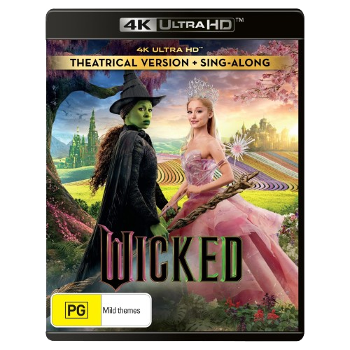
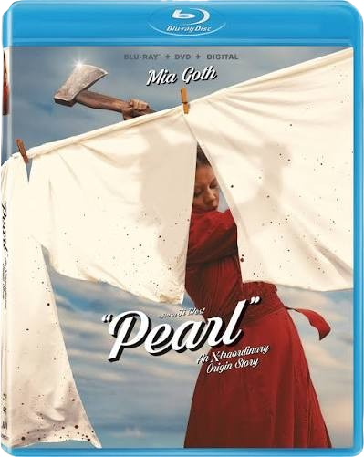

Featured Movies
Wicked (4k UHD Theatrical Version + Sing-Along Edition)
₱1,900
Buy Now
Discover the untold story of the Witches of Oz in this spectacular cinematic adaptation of the Broadway smash hit. Follow Elphaba and Glinda as their unlikely friendship is tested by extraordinary circumstances.
- Format: 2-disc 4K Ultra HD
- Video: 2160p Ultra HD with Dolby Vision
- Includes: Immersive Spatial Audio, exclusive featurettes, and collectible slipcover
- Age Rating: Rated PG (for some scary action, thematic elements, and brief suggestive content)

Pearl (Walmart Exclusive Art Blu-Ray)
₱970
Buy Now
Trapped on her family's isolated farm, a young woman's desperate desire for stardom turns into a violent, technicolor nightmare.
- Format: Blu-Ray
- Video: 1080p HD
- Includes: N/A
- Age Rating: Rated R (for strong violence, gore, strong sexual content, and graphic nudity)
